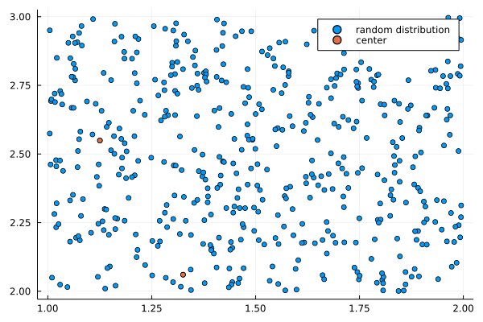

Clustering Strategies
For the algorithms defined in this pakage the given set of datapoints have to be sorted in an algebraic tree. Therefor the following strategys can be used.
Box Tree
K-Means Clustering Tree
Definition
The K-Means algorithm is a clustering strategy for n-dimensional spaces, in which each cluster is representet by its center. In this case the algortihm is implemented for a two or three dimensional euclidian space.
Idea
The goal of the algorithm is to divide the dataset in k clusters, which are then alternately divided in k clusters. The procedur is as follows: At first there are k points choosen from the dataset as centers. Then each point is sorted to its closest center. For each resulting cluster the center is recalculated by its points and all points are resorted to the new centers. This step is repeated for a givn number of iterations. The whole process is alternately repeated for each cluster.
Algorithm
Givn is a random distribution of datapoints in 2D, which should be sorted in a binary tree. Two points out of the dataset are choosen as the first centers. For each of the points the euclidean distance to both centers is calculated by:
\[ dist = norm(x - c_i)\quad for\enspace i = 1,2,..,k\]
With $x$ the location of the datapoint and $c_i$ the centers. The point is then added to the closer center.
 
The centers are shown in the first picture in orange and each cluster is represented in the second picture by one color. To achieve a more even distribution between both clusters, the centers are recalculated. Therefor the distance between the center and each point of the cluster has to be minimized. This can be done by taking the mean over all points.
\[ c_i = N_k^{-1} * \sum_{n=1}^{N_k} x_n\]
The dataset is resorted to the updated centers, resulting in the following distribution.

As it can be seen the updated clusters can result in a more even distribution. These steps can then be repeted for a givn amount of iterations. The final clusters are afterwards taken as new distributions of datapoints and the algorithm can alternately be repeated until clusters with a minimum amount of points or a givn number of level is reached.
Comments
As it can be seen in the example more iterations will in general lead to more equal clusters. For non homogenous distributions equal sized clusters can not always be reached, but more iterations will generate in general a better tree structure for the algorithms in this package. For the the algorithms in this package iterations between 10-100 and two children for each level are recomended.